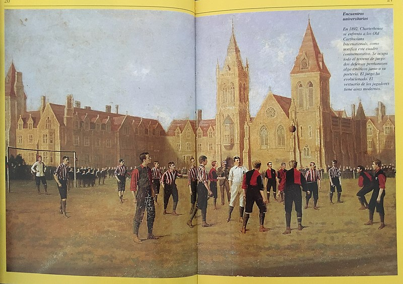
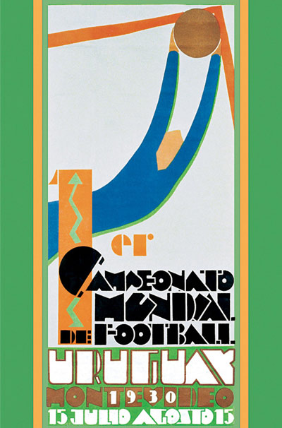
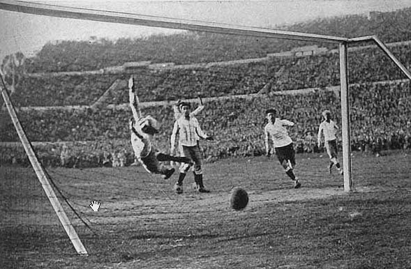
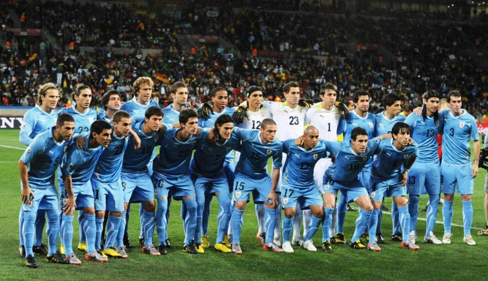
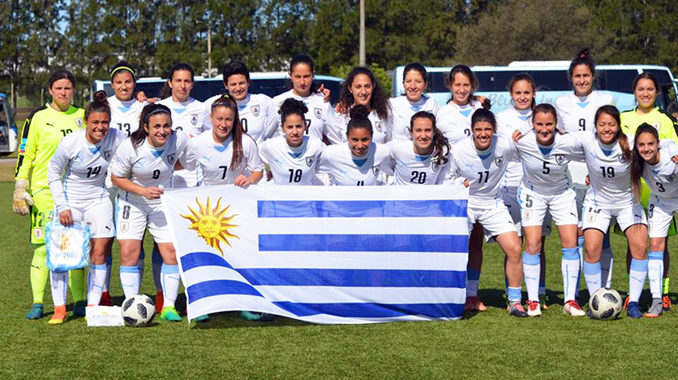

Los orígenes antiguos de este deporte son inciertos, pero en el siglo III a. C. en China se practicaba un deporte similar. En este remoto antecedente del fútbol los soldados de la Dinastía Han practicaban un ejercicio llamado ts’uh Kúh que consistía en arrojar una bola con los pies hacia una pequeña red. En algunas variantes el jugador debía hacerlo mientras se defendía del ataque físico de sus rivales.
Siglos después hubo prácticas más semejantes al fútbol moderno como el kemari japonés en el que una pelota debía ser mantenida en el aire el mayor tiempo posible pasándosela entre jugadores sin usar las manos.
También hubo variantes occidentales, como el episkyros griego y el haspastrum romano de los cuales se tiene muy poca información. También se sabe hoy que los antiguos pueblos mesoamericanos practicaban algo similar llamado pok ta pok hace unos 3.000 años y que otro tanto hacían los aborígenes norteamericanos aunque lo llamaban pasuckuakohowog.
Sin embargo, es poco probable que estos deportes ancestrales tuvieran influencia directa en el fútbol moderno. Lo más próximo en la historia europea son los juegos de pelota practicados por jóvenes británicos y franceses. En los carnavales era común su práctica en las islas británicas, ocasiones en las que podía participar un pueblo entero.
Los italianos tuvieron el antecedente más claro de todos, el calcio florentino, menos violento que sus variantes británicas y más organizado que las francesas, consistía en dos equipos de 27 jugadores cada uno. Se practicó a partir del siglo XVI y en 1580 Giovanni Bardi presentó el primer conjunto formal de reglas.
La historia moderna del fútbol comienza en Gran Bretaña en el siglo XIX cuando surgieron las primeras reglas unificadoras del fútbol de carnaval, comenzando a practicarse en asociaciones colegiales fuera de la época de festividades. De hecho en 1863 las reglas de juego de la colegiatura de Cambridge fueron la base del reglamento actual.

Partido entre Charterhouse y Old Carthusians Internationals en marzo de 1892
Fue entonces que con un reglamento de apenas 13 normas el fútbol moderno fue promovido por la recién creada Football Association (FA). De allí también surgió el término soccer derivado de “association” y el sufijo –er. También la primera competición de ligas de la historia, la Football League en 1888.
.jpg){kind=link}
Hacia finales del siglo XIX y principios del XX, el fútbol se había extendido por toda Europa y luego a otros continentes, en parte gracias al sistema colonial europeo y al intercambio comercial con las recientes repúblicas americanas.
La primera liga de fútbol americana fue la argentina fundada en 1891 y el primer partido internacional por fuera de Europa se disputó entre Argentina y Uruguay en 1901.
En 1904, en París, se fundó la Fédération Internationale e Football Association (FIFA) por los representantes futbolísticos de ocho distintos países: Francia, Bélgica, Dinamarca, España, Países Bajos, Suecia, Suiza y Alemania. Su objetivo era gestionar los encuentros europeos no vinculados a Gran Bretaña e Irlanda quienes rechazaron inicialmente la existencia de un organismo futbolístico mundial.
La primera copa mundial de fútbol de la historia se jugó en 1930 en Uruguay. Luego surgieron a Copa Intercontinental en 1960, la Copa Libertadores sudamericana y la Liga de Campeones europea. El fútbol femenino surgió profesionalmente luego de la Primera Guerra Mundial cuando aumentó la participación femenina en la sociedad y en el trabajo.  
Afiche oficial de la Copa Mundial de Fútbol de 1930.
El cuarto gol de Uruguay vs Argentina anotado por Héctor Castro.
{kind=link}
{kind=link}
El fútbol en Uruguay
El fútbol fue introducido por los inmigrantes ingleses en Montevideo en los años 1880. El primer partido de fútbol del cual se tiene conocimiento en Uruguay fue el disputado en 1881 entre los clubes Montevideo Rowing Club (fundado en 1874) y Montevideo Cricket Club (1861) ambas instituciones polideportivas.
El primer equipo uruguayo dedicado principalmente a la práctica del fútbol fue el Albion Football Club fundado el 1º de junio de 1891. El 30 de marzo de 1900 se fundó la Uruguay Association Foot-ball League actual Asociación Uruguaya de Fútbol con el fin de organizar el fútbol en el país y sus campeonatos. El primer campeonato uruguayo de fútbol fue ese mismo año el cual fue obtenido por el Central Uruguay Railway Cricket Club.
Selección nacional
El 16 de mayo de 1901 en Montevideo la selección de fútbol de Uruguay juega su primer partido frente a su par argentino. Este partido fue el primero a nivel de selecciones fuera del Reino Unido.  
En 1916 se consagra campeón del primer campeonato sudamericano de selecciones (actual Copa América) en forma invicta.
En 1924 obtiene la medalla de oro en los juegos olímpicos impresionando a los equipos europeos por su nivel de juego. La hazaña se repetiría cuatro años más tarde en los juegos olímpicos de 1928.
Ante estos logros la FIFA le otorgó la organización del primer Campeonato Mundial de Fútbol el cual también lo tuvo como campeón.
En 1950 logró la Copa Mundial de Fútbol de ese año venciendo a Brasil en el episodio llamado maracanazo el cual es considerado hasta el día de hoy como la más grande proeza del fútbol mundial.